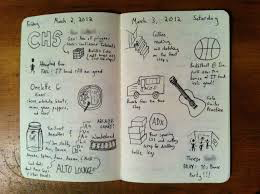

Log Book

Buy a small note book so that you can take lab notes. Lab notes are like a scientific diary. They describe what you did every day for the course. Do not mingle your lab notes with your lecture notes. Do not keep the lab notes on some computer.
The general purpose of a lab book is to document your work and your collaborations. If anything goes wrong, it can help you reconstruct the past and convince others of your position.
For this course, the lab book is to help you manage your partnership. You must document every meeting: its purpose, duration, accomplishments, failures, agreements. You may document other activities, such as reading, planing, writing, coding you do for this course.
You must take these notes on a daily basis. It is probably best if you take notes as you prepare projects or complete project steps.
The first page of your lab book is dedicated to information about your partner. You should enter the following information on this page: name, cell phone, social media if you prefer this over email, and "daily" email address. Put nothing else on this page.
Create a cover page for each weekly project. Enter on this page the title of the project, your plan (the steps you anticipate), and a time estimate (in hours/minutes) for the project.
Create a conclusion page for each weekly project. Record on the page how much time you actually spent and the ratio of time spent over time estimated.
Note You won’t get credit for accurate time estimates. For your own sake, you should be as honest as you can with these estimates, so that you learn to estimate how much time real project work will consume. Acquiring this skill is critical for developers as well as people who wish to manage developers. There is nothing like practice and doing to develop this skill.
Create a new page for each meeting.
time and date
place
and your goals (or planned activities) for the meeting.
The last two lines of the page should specify when and where you will meet again.
If your partner doesn't show up for the meeting, make a note. Also record what actions you undertook to reach your partner. If you sent a reminder email, print a copy and glue it into your lab book.